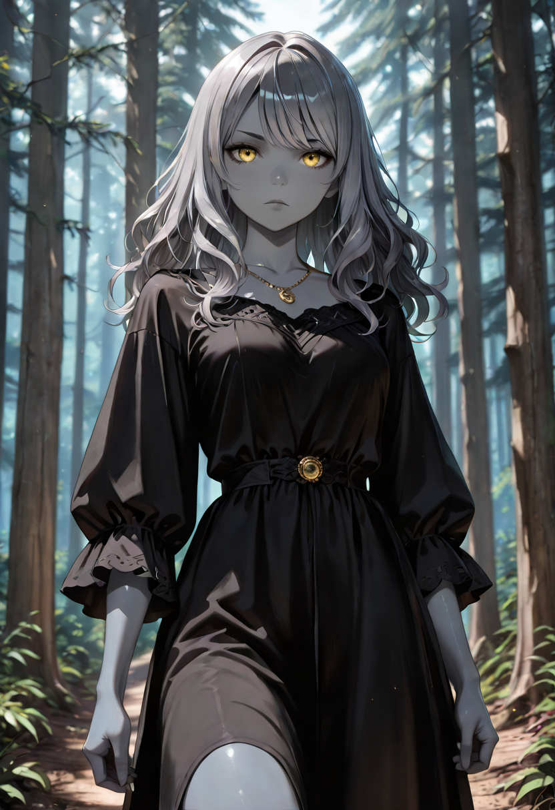
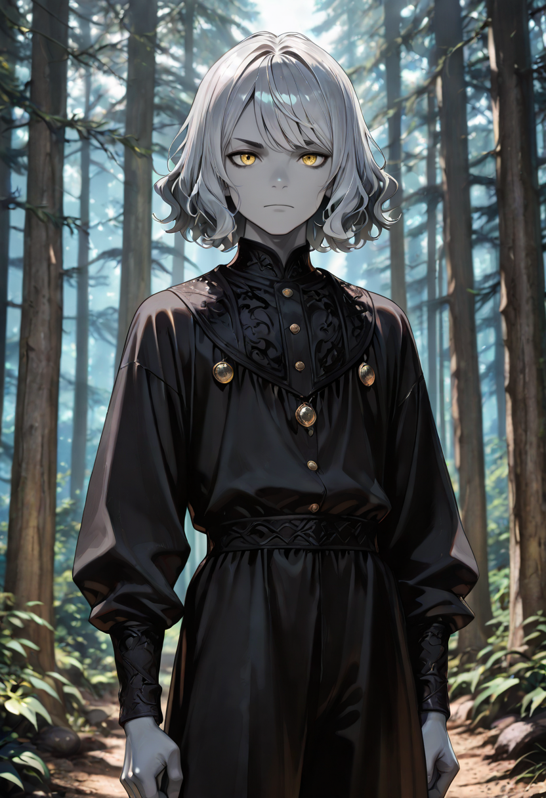
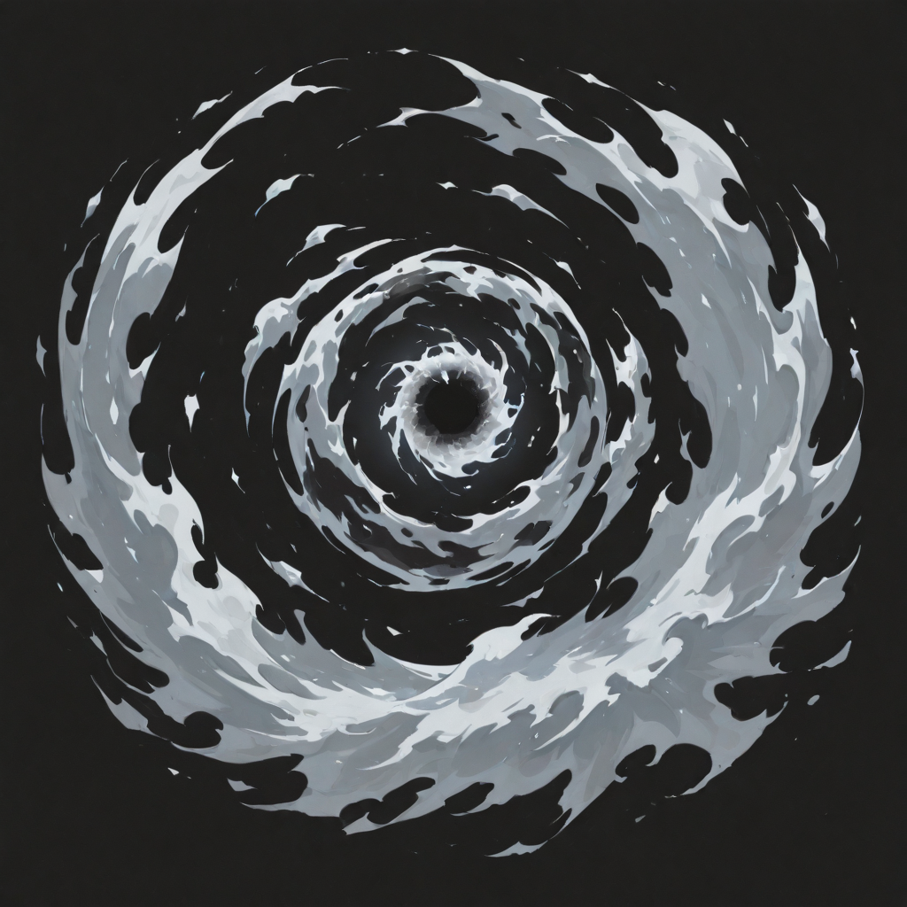

First Ignition
They look like they are made of charcoal. A fine, granular surface that sheds grey-white particles when they move , the way old embers release their final heat. Their eyes are the only part that remain warm: two small points of amber light in an otherwise ashen face that has not yet learned what it is becoming.
The Ash Fruits were not born into magic. In life, most were ordinary people who had ordinary proximity to fires , blacksmiths, glass-blowers, torch-lighters, those who tended hearths through long winters. They understood fire before they could command it. The sap simply remembered what their hands already knew and extended that knowledge inward.
They are the first entry point into the Araldi system, and they carry the particular dignity of any first step: tentative, necessary, impossible to skip. The mages who become Seraph-class can trace their power lineage directly back to the moment an Ash Fruit launched its first unremarkable spark across a battlefield and something in the chain reaction began.
Tactical Data

Spark
Base SkillGallery